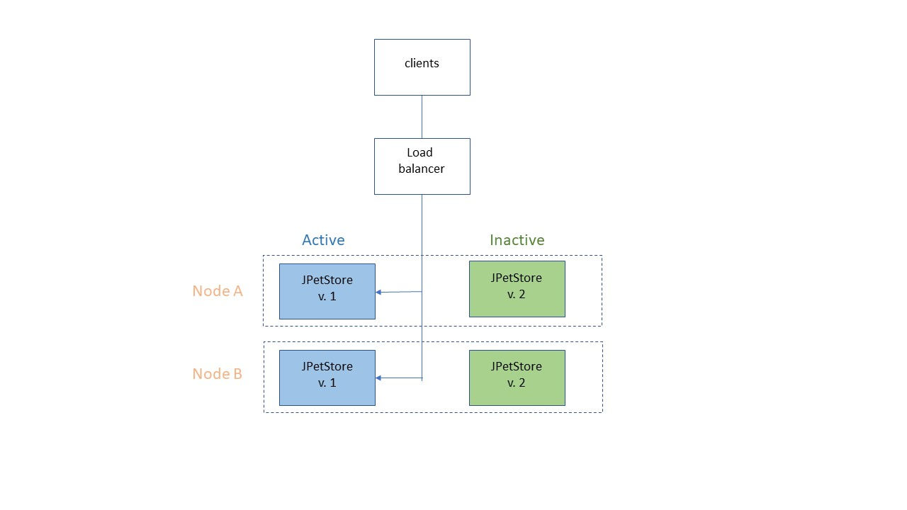
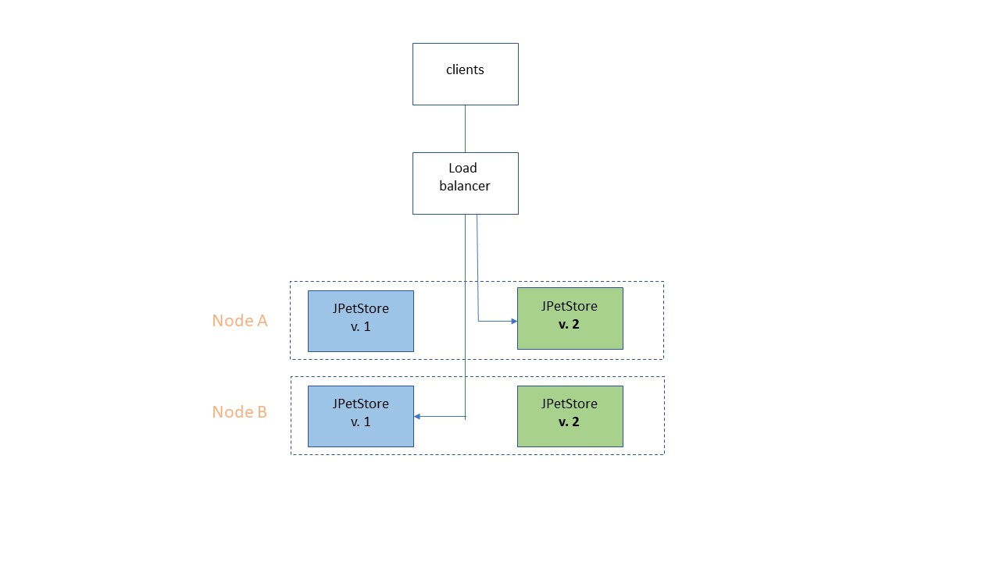
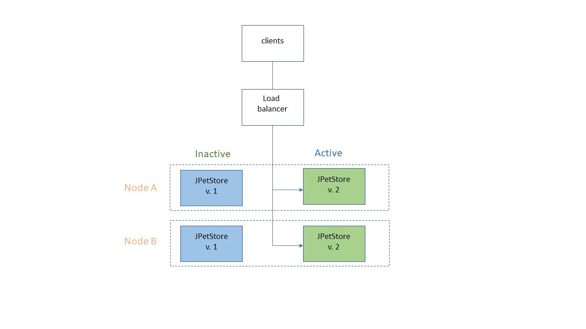

Introduction
In this tutorial, you setup a deployment with two identical production environments, referred to arbitrarily as Blue and Green. One environment is always live, and the other environment is inactive and available to host an upgraded version.
Business-critical multinode installations that must always remain in production require advanced updating strategies. Blue-green deployments fit this requirement because they provide smooth transitions between versions, zero-downtime deployments, and quick rollbacks.
A blue-green deployment uses two identical production environments. After verifying that an update in the inactive environment is working with a new version, you switch traffic to the new version. If anything goes wrong, you can quickly switch back to the old version.
This graphic illustrates a two-node production topology. While customers use the nodes in the active blue environment, you update the inactive green environment with the new version. You can perform as many tests as required in the inactive green environment. When everything is ready, you only need to update the load balancer to switch production environments.

One approach is to switch traffic to a single updated node and validate it before switching the other nodes. Testing one node in this way is called a canary deployment. If the canary node fails, traffic remains uninterrupted because the non-updated nodes continue to serve customers.

If the update is successful, you direct the load balancer to switch all the remaining traffic to the other updated nodes.

When you are ready for the next release, you start the cycle over using the now-interactive blue environment.
Learning objectives
In this tutorial, you learn how to complete these tasks:- Use tags to design resources for multiple-node environments Deploy.
- Configure environments for no-downtime deployments.
- Create application processes to deploy multiple components to multiple nodes.
- Configure user approvals for production deployments .
Time required
This tutorial takes 2 - 3 hours to finish. If you explore other concepts that are related to this tutorial, it could take longer to complete.System requirements
To run this tutorial, you need the following resources:- An installation of Deploy, version 7.0.0 or later.
- A Deploy agent installed in your environment.
- While not required, you can use multiple computers, virtual images, or cloud instances to use for agents in the tutorial.
Prerequisites
- This tutorial assumes familiarity with Deploy. If you new to the product, you might benefit from completing the Basic or Intermediate tutorials.
- You must have an Deploy account with the permissions to create and edit applications, environments, and components, and to create and run processes.
- This tutorial uses the application created in the JPetStore tutorial. You can also download some of the resources created in the JPetStore tutorial. If you did not complete the JPetStore tutorial, you can use any multi-component application that you have sufficient permissions to update and modify.